Personal cloud drive · iPhone / iPad / Mac
Your files, in a
bucket you own
Guyun is a file manager for the object storage you already pay for — Alibaba Cloud OSS, Tencent Cloud COS, Cloudflare R2, Backblaze B2, MinIO, or any S3-compatible service. The bucket, the keys and the bill are yours: no account system, no server of ours, no telemetry. Files go straight from this device to your own bucket.
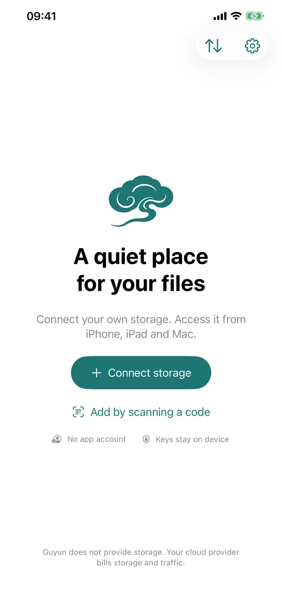
A cloud drive puts your files on someone else's servers. Guyun doesn't.
Most cloud drives decide for you: how much space, how fast, when the price goes up. With Guyun the bucket sits in your own cloud account, so those decisions stay yours.
| Typical cloud drive | Guyun | |
|---|---|---|
| Space | Priced by the vendor, bought in tiers | Your bucket, at your provider's rates, resized whenever you need |
| Speed | Tied to your membership tier | Only your bucket and your network — no artificial throttling |
| Cost | A subscription; the vendor decides when it rises | App is free; storage and traffic billed by your provider, we take no cut |
| If it shuts down | The service ends, and the files go with it | The bucket stays; any tool can still read it |
| Moving out | Rate-limited exports, proprietary formats | Standard object storage, readable by anything |
What it does
Browsing, transfers, previews, trash — the everyday parts are all here. No social feed, no recommendations, no guessing what you might like.
Browse and manage
Grid or list, sorted by name, date or size; new folders, rename, copy and move.
Whole-bucket search
Searches the entire bucket, not just the folder you happen to be in.
Upload and download
From Files or Photos, or a whole folder at once. Pause and resume the queue; downloads go to a folder or to Photos.
Background transfers on iOS
Files up to 200 MB go to the system as one request and finish even if you switch apps or lock the screen; larger ones continue with the background time granted.
Progress, wherever you are
A small pill in the corner shows how many transfers are running, how far along, and whether something is waiting for you.
Usage ledger
How much Guyun moved today, this month and last month — by bucket and by device, with cellular counted separately and kept on this device.
Storage size
Measure a bucket to get its file count and total size. A large one can be finished over several taps; the result stays on this device.
Archive files
Archived objects are marked, and the app asks before a restore — how long, who is billed, whether it can be cancelled, all in the dialog.
Preview
Zoom images, play video while it is still loading, open PDF and text. Previewing leaves no transfer record.
Trash
Deletes move into the bucket's own trash folder, where they can be restored or removed for good — with a confirmation first.
Several devices
The same bucket on iPhone, iPad and Mac; hand a configuration to another device by scanning a code instead of typing keys.
Locks
Face ID / Touch ID for the whole app or one storage. Transfers keep running while locked, and turning a lock off always asks for authentication first.
Screens
One design across three platforms. Tap any image to enlarge it.
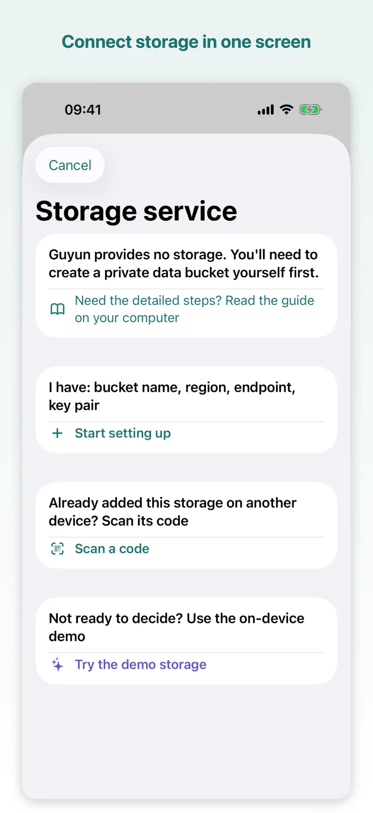
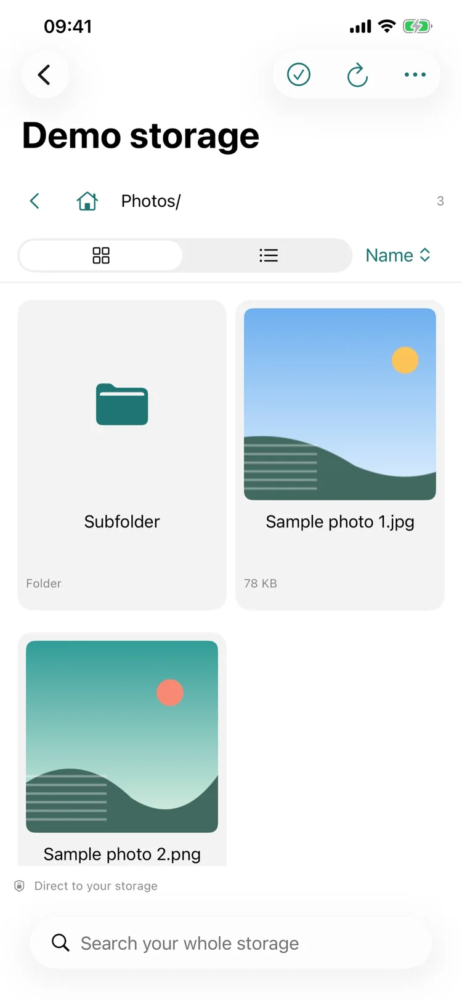
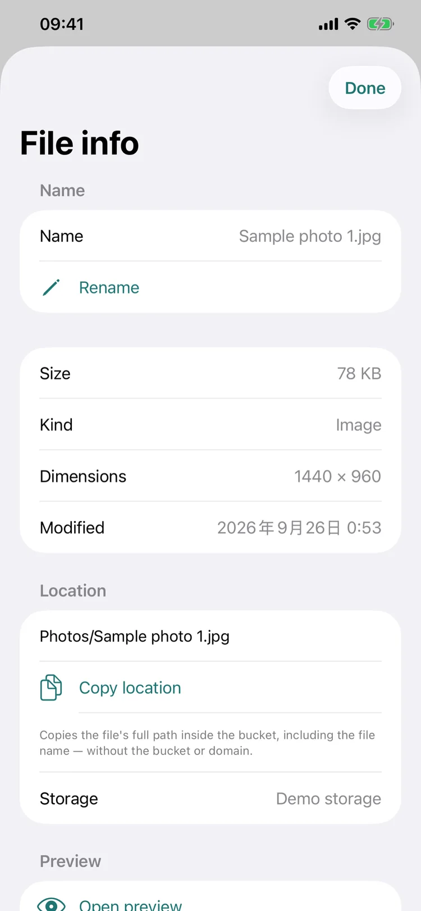
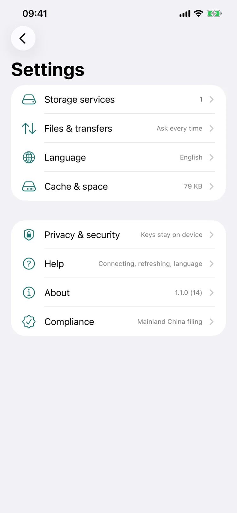
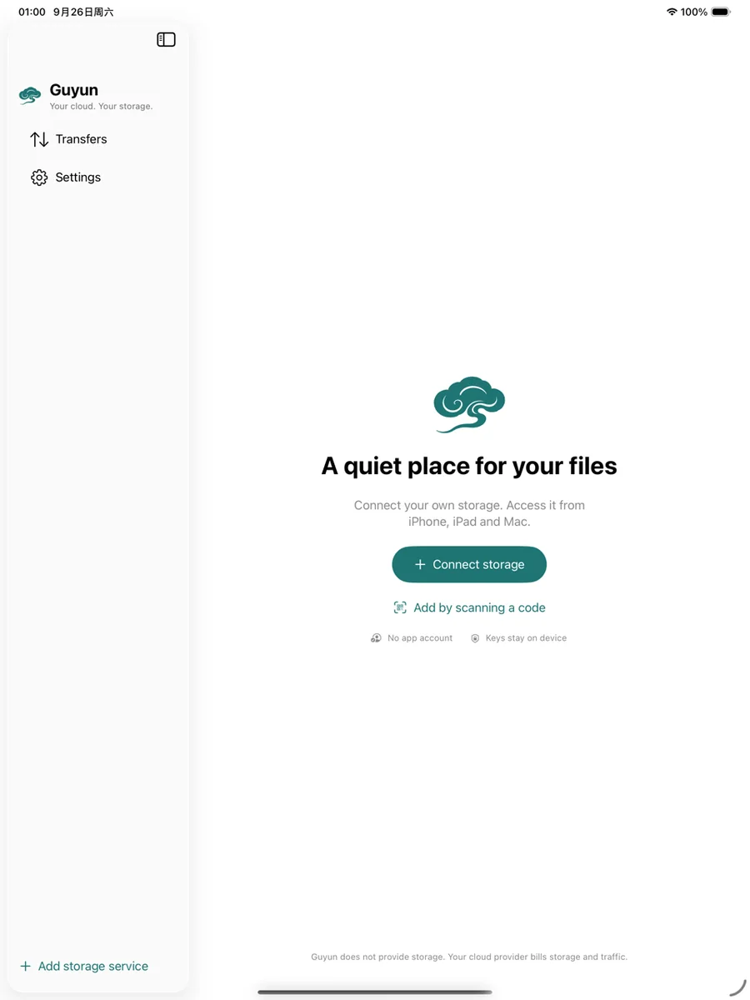
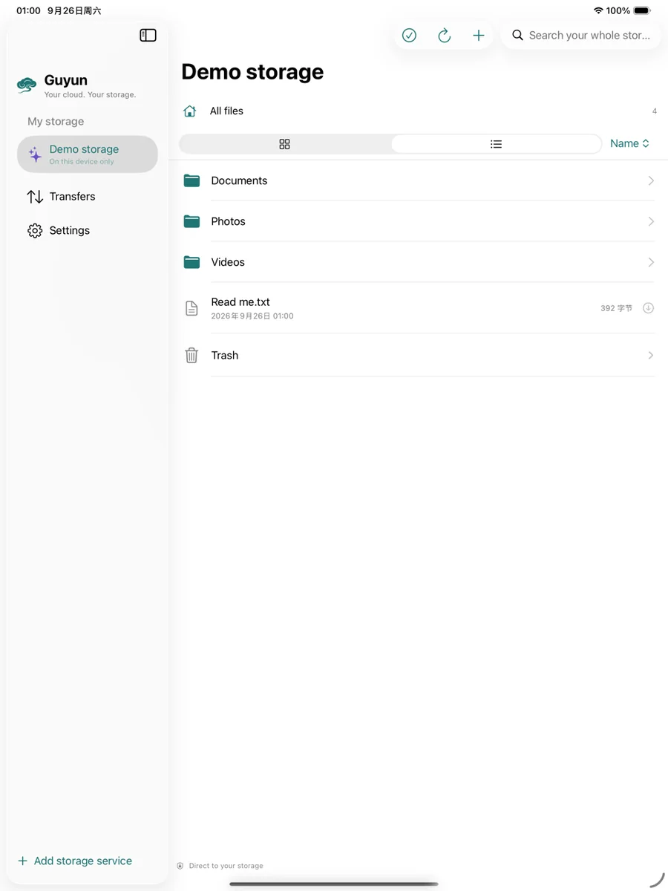
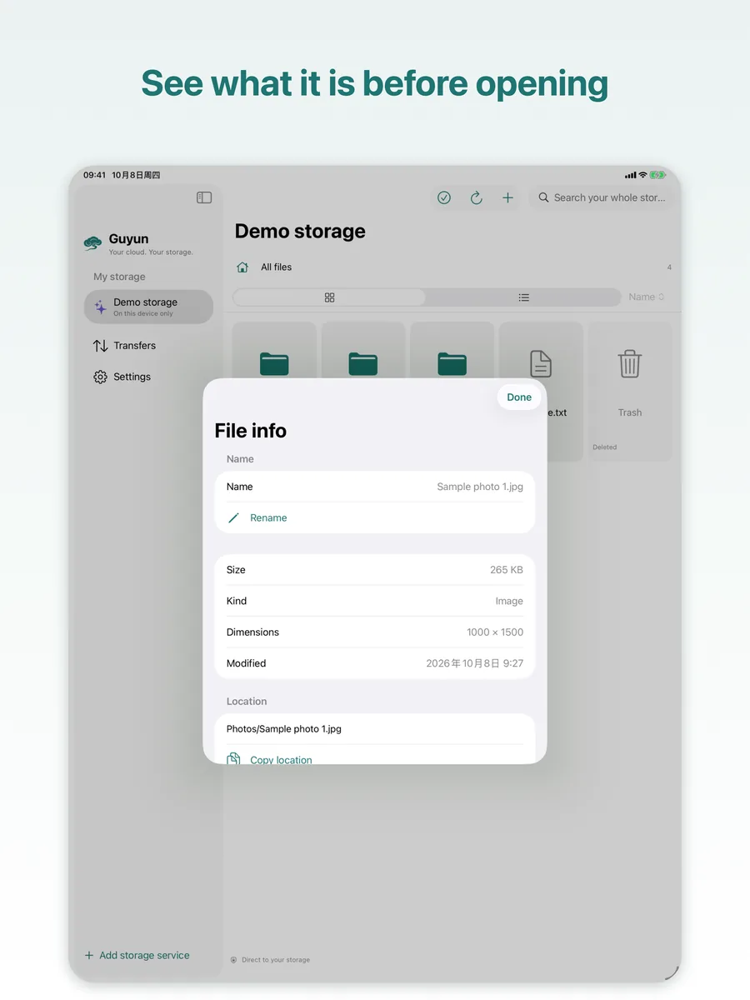
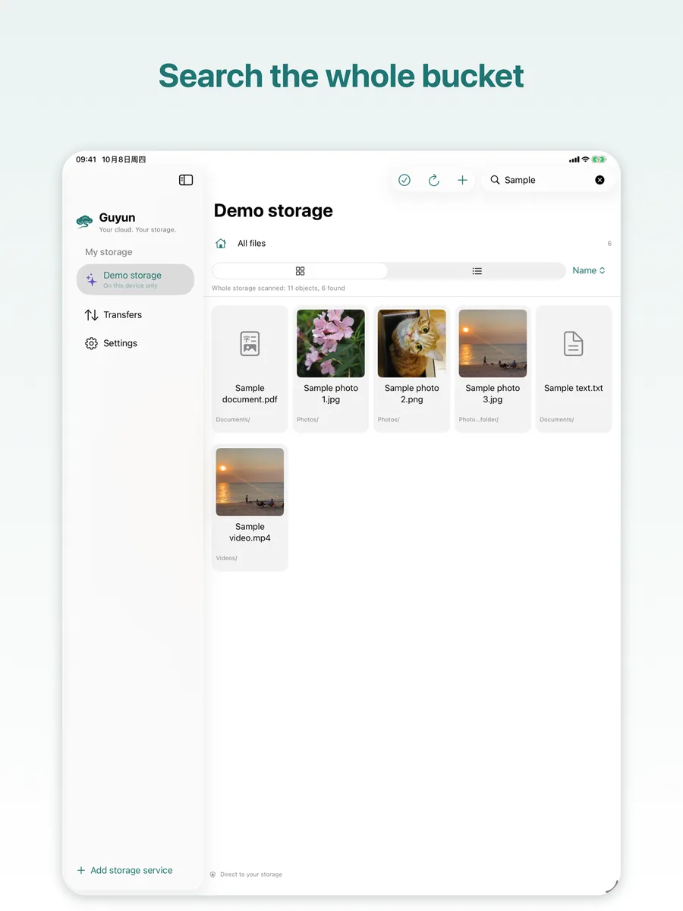
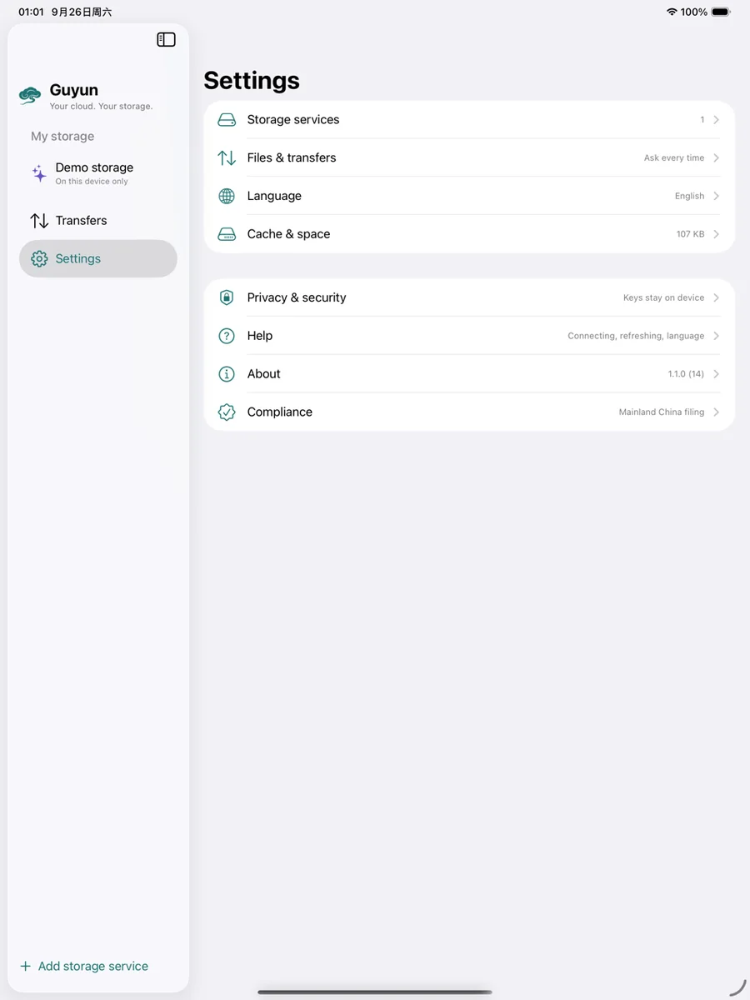
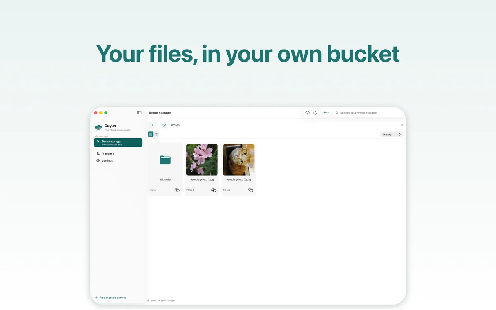
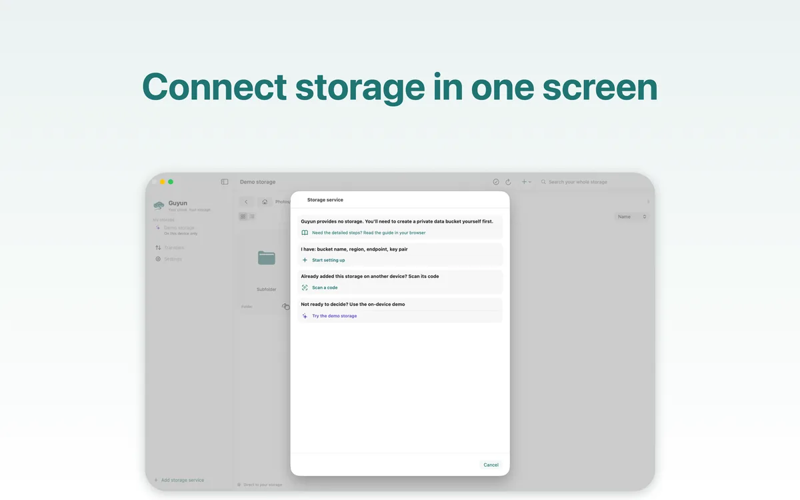
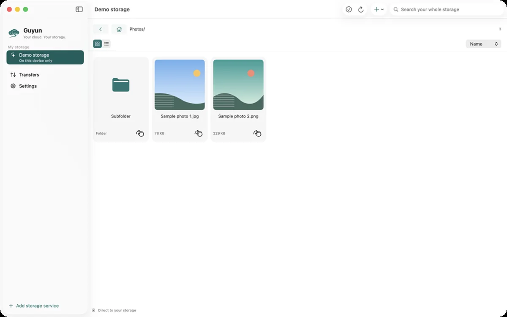
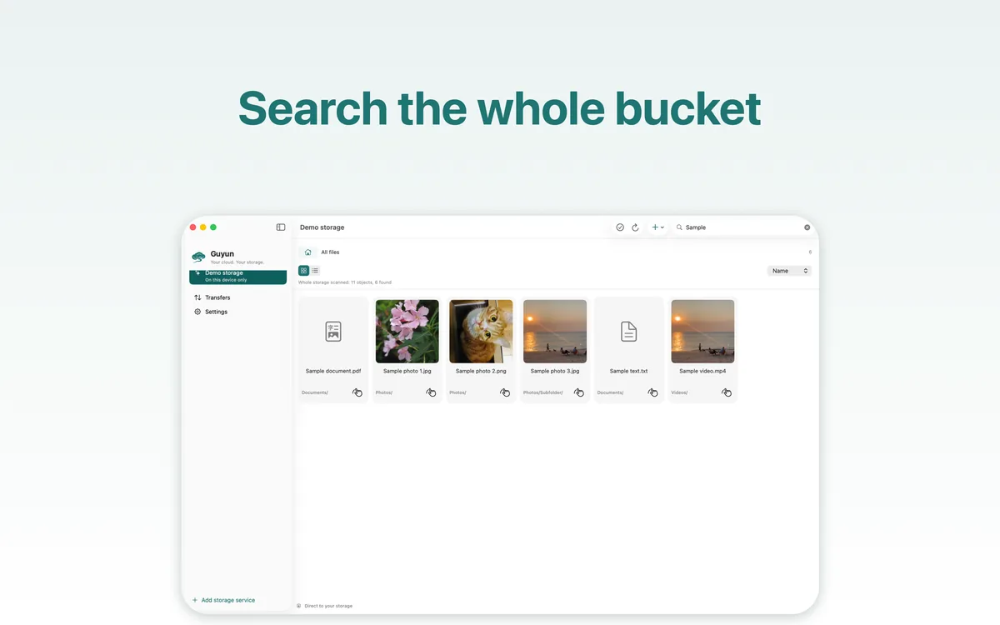
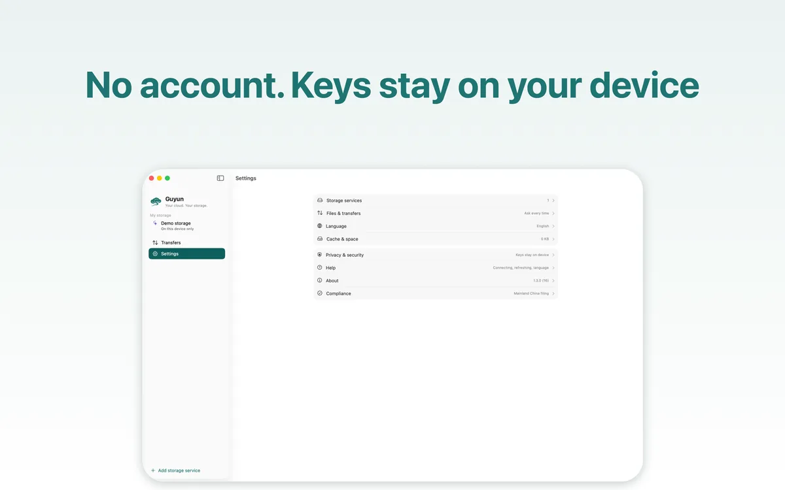
Free app. The only bill is your bucket.
Guyun provides no storage and takes no cut of yours. What you pay your cloud provider is the whole cost.
| Scenario | Stored | Monthly egress | China region, per month |
|---|---|---|---|
| Light | 50 GB | 10 GB | about ¥8–11 |
| Everyday | 200 GB | 50 GB | about ¥36–51 |
| Large | 1 TB | 100 GB | about ¥141–182 |
| Archive | 2 TB archived | 5 GB restored | about ¥62–68 |
Estimates from official list prices as of October 2026, excluding request fees; archive tiers add minimum storage duration and retrieval charges. Prices change — check your provider before ordering.
Run the numbers first
The same “200 GB stored, 50 GB read a month” can differ by a few dollars between providers — and by several times once egress is involved. The storage price is rarely the deciding number.
We compared 19 object-storage providers: storage, egress, minimums and free tiers, plus the monthly cost of four typical scenarios.
Open the cost calculator ↗Getting started
You need exactly two things: a bucket, and a key pair allowed to use only that bucket.
Create a private bucket
In your provider's console, create a bucket and keep it private. Make an access key for Guyun that is allowed to use only that bucket — never your root key.
Pick the service and place
Choose the provider and region in the app; the endpoint and region fill themselves in. You type the bucket name and the keys — Tencent COS also wants the APPID that ends its bucket names.
Connect and go
The connection test only lists the bucket root. On success the keys go into this device's Keychain, and browsing, uploading and previewing feel like local files.
No bucket yet? Walk through it with the demo storage
The built-in demo storage generates sample photos, a video and a PDF on your device: no account, no keys, no network. Browse, preview, upload, rename, copy, move, delete and restore. Remove it whenever you like; nothing is left behind.
| Platform | iPhone / iPad / Mac — one app covers all three |
|---|---|
| Requires | iOS 17 / iPadOS 17 / macOS 14 or later |
| Storage | Alibaba Cloud OSS, Tencent Cloud COS, Qiniu, Upyun, Backblaze B2, Cloudflare R2, MinIO, and any S3-compatible service |
| Languages | English, Simplified Chinese, Traditional Chinese (switch in Settings; applies next time you open the app) |
| Price | Free. Storage and egress are billed by your provider at its published rates |
| Name | Guyun (孤云) — “a lone cloud”, from a poem by Li Bai: “The birds have flown away; a lone cloud drifts off at ease.” |
Privacy, in plain terms
No account and no server of ours — so there is nothing of yours for us to collect.
- It talks to your address only. The app talks to the storage you entered and to nothing else: no relay server, no telemetry.
- Keys stay on this device. Access keys live in this device's Keychain — never uploaded, never exported with a configuration, never synced through iCloud.
- The handoff code contains your keys in plain text. Keys leave the device only when you deliberately hand a storage to another device. Treat the code like a password and show it to your own device only.
- No usage data. No third-party SDKs, no analytics, no ads — not even “anonymous statistics”.
- Face ID / Touch ID is the system's job. That data never leaves your device; the app only learns pass or fail.
- Locks are screen gates, not encryption. They keep out someone who picks up your unlocked device; files stay under whatever permissions your bucket gives them.
Questions
Do I need my own cloud storage?
Yes. Guyun provides no storage: you need an object-storage bucket and a key pair allowed to use only that bucket. It works with Alibaba Cloud OSS, Tencent Cloud COS, Qiniu, Upyun, Backblaze B2, Cloudflare R2, MinIO and any S3-compatible service.
If you don't have one yet, the built-in demo storage takes you through the whole app without an account, keys or a network.
Is the app really free?
Yes. No subscription, no in-app purchase, no feature locks, and no cut of your storage bill. The only thing you pay for is your provider's invoice — storage and egress, at its published rates.
Why can't I connect to a bucket in mainland China?
That is not a Guyun limit. For OSS accounts opened on or after 20 March 2025, the default public endpoint refuses data operations (uploads and downloads) on buckets in mainland regions, returning PublicEndpointForbidden — private buckets included, and it depends on when OSS was opened, not when the bucket was created.
To stay in a mainland region, bind a custom domain with an ICP filing to the bucket and put that domain in the endpoint field. Otherwise use a bucket in Hong Kong or another overseas region, or run MinIO yourself.
Do my files go through your servers?
No. There is no account system and no server of ours: the app talks to the storage address you enter, and files travel straight from this device to your bucket.
Are my keys safe?
Access keys live only in this device's Keychain — not uploaded, not exported with a configuration, not synced through iCloud.
The one exception is a handoff you start yourself: the code contains the keys in plain text, expires after 60 seconds, can be claimed once and can be cancelled. Show it only to your own device, and rotate the keys at your provider if it might have been seen.
Do I have to re-enter keys after switching phones or reinstalling?
Yes. Keys are not synced through iCloud — that is the price of keeping them on the device. Use “Add by scanning a code” to bring the whole configuration over from the old device (valid for 60 seconds), or type the keys again.
Do my devices sync automatically?
No. Guyun is not a sync tool and not an automatic backup tool: it never starts a transfer on its own. Every upload and download is started by you and shows its result.
The same bucket can be connected on iPhone, iPad and Mac at once; anything written by one device appears on the others after a refresh.
Where do deleted files go?
Into the bucket's own trash folder, where they can be restored or removed for good — with a confirmation first.
The trash lives in your bucket, so it takes up storage and is billed like any other file. Emptying it is how the bill goes down.
Take your files back
Free download, no sign-up. Works with a bucket — and without one.